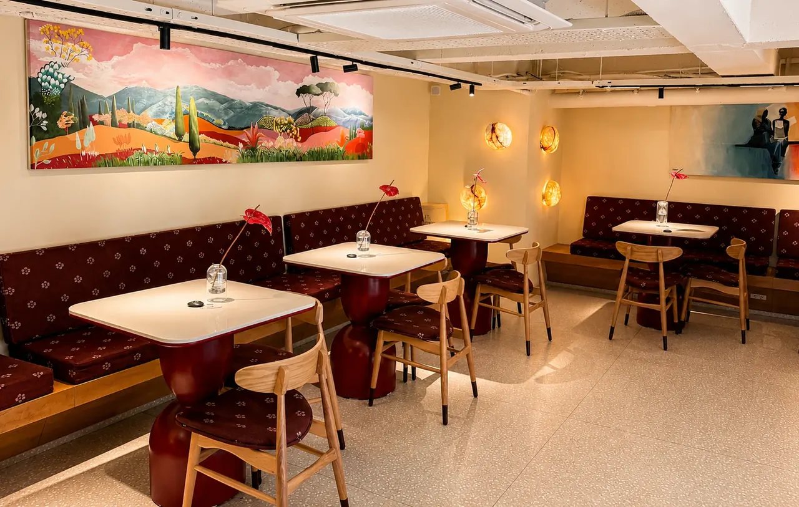

درباره ما
در ال کافه، احترام، سلامت و کیفیت اساس هر تجربه است. از انتخاب مواد اولیه تا شیوه میزبانی، همهچیز با دقت انجام میشود تا فضایی امن، گرم و آرام در میان روزهای پرمشغله شما بسازیم.

منتظرتونیم
نشانی
مسیر روی نقشه
خیابان چهارباغ بالا، نبش کوچه یحیی خان، مجتمع متروپل
L CAFE — ISFAHAN